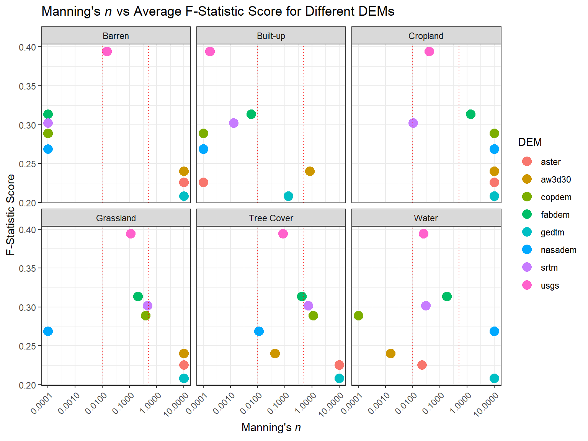
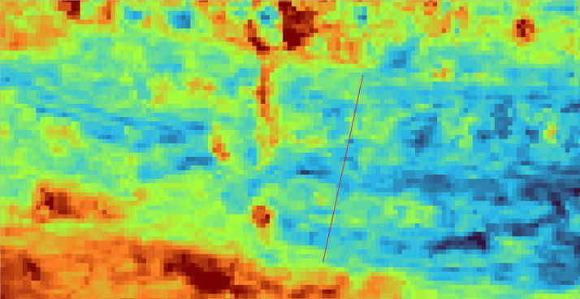
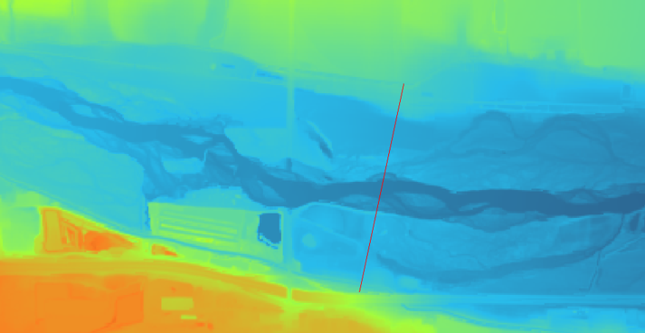
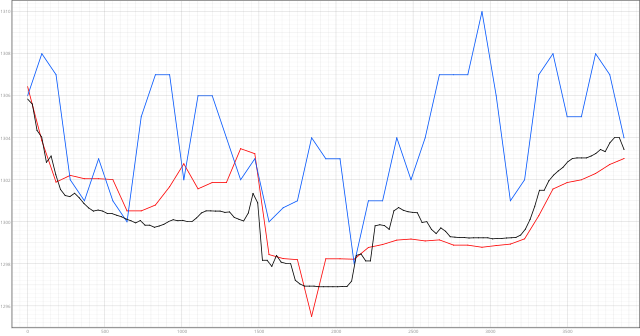
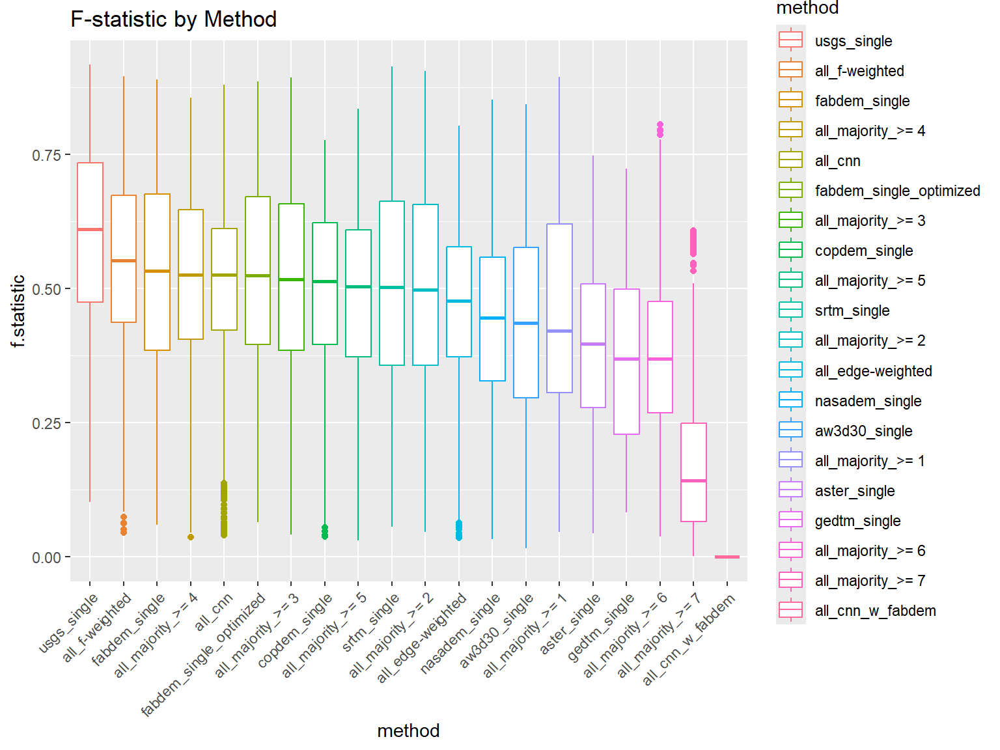

Manning’s n Effect on F-Statistic with Different DEMs
1 Introduction
Manning’s n is a coefficient used in hydrology to represent the roughness of a channel or surface, which affects the flow of water. Different Digital Elevation Models (DEMs) can yield different values of Manning’s n, which in turn can affect the flood extents generated by hydraulic models. By comparing a flood inundation map generated using a DEM with a known Manning’s n value to a reference flood inundation map, we can calculate the F-statistic, which is a measure of the similarity between the two maps. In this analysis, we will investigate how Manning’s n values applied to different DEMs affect the F-statistic, whether these differences are statistically significant, and what implications this has for flood modeling.
2 Data and Methods
The primary datasets we need are the DEMs, the Manning’s n classification coverage, and the reference or “ground truth” flood inundation maps. Other datasets required for running the hydraulic model are held constant and will not be considered further (they have been tested in previous analyses). A summary of the datasets used can be found in @tab-datasets.
2.1 DEMs
We use the following DEMs in our analysis: ASTER, AW3D30, COPDEM, FABDEM, GEDTM, NASADEM, SRTM, and USGS. Each DEM has different spatial resolutions and accuracies, which can affect the derived Manning’s n values and the flood extents. The USGS DEM, from the USGS 3DEP program, is considered the most accurate and serves as our reference DEM.
2.2 Manning’s n Classification
Manning’s n values are assigned based on land cover classifications. We use land cover from ESA WorldCover 2021, which has a spatial resolution of 10 meters. The land cover classes are categorized into six types: Tree Cover, Grassland, Cropland, Built-up, Barren, and Water. There are additional land cover classes in the dataset, but they are occur infrequently in the typical flood plain and are not included in this analysis.
2.3 Reference Flood Inundation Maps
We use reference flood inundation maps generated frum the USGS Flood Inundation Mapping program. These maps are created using advanced hydraulic models, calibrated on observed flood events, and are considered the “ground truth” for our analysis. We have data for 30 sites across the US, with multiple flood stages per site, and for each stage we have a reference flood inundation map.
| Dataset | Description |
|---|---|
| DEMs | ASTER, AW3D30, COPDEM, FABDEM, GEDTM, NASADEM, SRTM, USGS (reference) |
| Manning’s n Classification | Land cover from ESA WorldCover 2021 categorized into Tree Cover, Grassland, Cropland, Built-up, Barren, and Water |
| Reference Flood Inundation Maps | Flood inundation maps from USGS Flood Inundation Mapping program for 30 sites across the US with multiple flood stages |
Figure 1 shows a visualization of different DEMs for a sample site, illustrating the differences in elevation data that can lead to different Manning’s n values and flood extents.

(a) ASTER DEM(b) FABDEM

(c) USGS DEM
(d) Elevation comparison2.4 Data Analysis Methods
The goal is to find the optimal Manning’s n value for each DEM that maximizes the F-statistic when comparing the generated flood inundation map to the reference map. The approach we use is as follows: 1. Define a range of allowable Manning’s n values for each land cover type. We chose a range of 0.0001 to 10, which gives us a wide range of values to test. 2. Using Bayesian minimization, we begin with an initial guess of Manning’s n values for each land cover type and iteratively adjust these values to maximize the F-statistic. The objective function will run the model using the Manning’s n provided. We invert the F-statistic to minimize it instead of maximizing it (F-statistic ranges from 0-1, 1 being a perfect match). This process is repeated for each DEM, resulting in an optimal set of Manning’s n values for each DEM. 3. We then compare the optimal Manning’s n values across DEMs and analyze how they affect the F-statistic scores. We also perform statistical tests to determine if the differences in F-statistic scores across DEMs are significant, and whether certain land cover types have a greater influence on the scores than others.
3 Data Analysis
Optimal Manning’s n values were discovered for each DEM using Bayesian minimization. To ensure the optimizer converged, we ran for 400 iterations. To ensure the optimizer did not overfit, we split the data into a training set (70%) and a test set (30%), and computed the inverse F-statistic every 10 iterations during the optimization process. An example of this convergence and validation process for FABDEM is shown in Figure 2. From the figure, we can see that the optimizer coverge after about 250 iterations, and that the validation score closesly follows the training score, indicating that the optimizer is not overfitting. This trend is similar across all DEMs, with convergence occurring between 200-300 iterations and no evidence of overfitting.

Figure 3 shows the optimal Manning’s n values for each land cover type and DEM, along with the corresponding F-statistic scores. The vertical red dotted lines indicate the range of typical Manning’s n values for each land cover type, based on literature values.
Looking at this figure, we see some interesting trends. For tree cover, grassland, and water land cover classes, the optimal Manning’s n values fall within the typical range of values found in literature. They also are quite consistnent across the majority of DEMs. This suggests that for these land cover types, the choice of DEM may not have a large influence on the optimal Manning’s n values. For cropland, built-up, and barren land cover classes, there is much more variability in the optimal Manning’s n values across DEMs, and many of the optimal values fall outside the typical range found in literature. This suggests that for these land cover types, the choice of DEM can have a significant influence. We must note that grassland, tree cover, and water are the most common land cover types in the flood plain. This may explain why the optimal Manning’s n values for these land cover types are more consistent across DEMs, as there is more data to inform the optimization process. In contrast, cropland, built-up, and barren land cover types are less common in the flood plain, which may lead to more variability in the optimal Manning’s n values across DEMs.
Another thing to note is the order of the DEMs. USGS scores the highest, followed by FABDEM and SRTM. We expect USGS to perform the best, as it is the most accurate DEM. FABDEM and SRTM are related products, suggesting that these DEMs may be better for flood modeling applications than the other DEMs tested.
Figure 4 shows the partial dependence plot for the USGS DEM. The partial dependance plot shows the relationship between each land cover type’s Manning’s n value and the F-statistic score, while holding the other land cover types constant. From the plot, we can see that for tree cover, grassland, and water, there is a clear parabloic relationship, with a clear minimia defined for each. The other land cover types show a linear relationship with a slope close to 0, suggesting that changes in Manning’s n for these land cover types do not have a large influence on the F-statistic score. This is consistent with our earlier observation that the optimal Manning’s n values for these land cover types are more consistent across DEMs, and that the choice of DEM may not have a large influence for these land cover types.

Figure 5 shows the partial dependence plot for the GEDTM. This partial dependence plot for this DEM looks quite different compared to the others. This plot shows a relationship where F-statistic scores are maximized at the upper bound of Manning’s n for nearly all land cover classes. This is an unusual relationship, and suggests that the optimization process may not have converged properly for this DEM, or that there may be some issue with the data or model for this DEM. This is further supported by the fact that GEDTM has the lowest F-statistic scores among all DEMs tested. For these reasons, the GEDTM does not seem suitable for flood modeling applications.

I used a linear mixed effects model to test whether the differences in F-statistic scores across DEMs were statistically significant, while accounting for the fact that we have multiple stages per site (non-independence of observations) and that there may be different variances across DEMs. Figure 6 shows the distribution of F-statistic scores by method.
@tab-lme reveals some key insights. First, USGS performs better than any other DEM-derived flood map, and is statistically significant in all cases. The closest to the USGS is the FABDEM weighted DEM (~0.049), the single FABDEM (0.067) and the SRTM (0.077). These DEM-derived flood maps are the most suitable alternatives to the USGS DEM for flood modeling applications. The other DEMs, especiall GEDTM and ASTER, have much larger differences in F-statistic scores compared to the USGS, and may not be suitable for flood modeling applications.
The model diagnostics indicate that there may be some issues with the model fit, as there is some evidence of underdispersion and non-normality of residuals. However, given the complexity of the data and the fact that we have accounted for non-independence and heteroscedasticity, we will proceed with interpreting the model results, but with caution.

contrast estimate SE df z.ratio
usgs_single - (all_f-weighted) 0.04865 0.00639 Inf 7.611
usgs_single - fabdem_single 0.07025 0.00639 Inf 10.990
usgs_single - all_majority_>= 4 0.08400 0.00639 Inf 13.141
usgs_single - all_cnn 0.08742 0.00639 Inf 13.676
usgs_single - fabdem_single_optimized 0.06733 0.00648 Inf 10.396
usgs_single - all_majority_>= 3 0.07964 0.00639 Inf 12.459
usgs_single - copdem_single 0.09807 0.00639 Inf 15.342
usgs_single - all_majority_>= 5 0.11611 0.00639 Inf 18.164
usgs_single - srtm_single 0.07746 0.00639 Inf 12.118
usgs_single - all_majority_>= 2 0.09270 0.00639 Inf 14.502
usgs_single - (all_edge-weighted) 0.13043 0.00639 Inf 20.405
usgs_single - nasadem_single 0.15158 0.00639 Inf 23.714
usgs_single - aw3d30_single 0.15895 0.00639 Inf 24.866
usgs_single - all_majority_>= 1 0.13805 0.00639 Inf 21.597
usgs_single - aster_single 0.18823 0.00639 Inf 29.447
usgs_single - gedtm_single 0.21965 0.00639 Inf 34.363
usgs_single - all_majority_>= 6 0.21834 0.00639 Inf 34.158
usgs_single - all_majority_>= 7 0.40669 0.00639 Inf 63.623
usgs_single - all_cnn_w_fabdem 0.58917 0.00639 Inf 92.171
(all_f-weighted) - fabdem_single 0.02160 0.00639 Inf 3.379
(all_f-weighted) - all_majority_>= 4 0.03535 0.00639 Inf 5.530
(all_f-weighted) - all_cnn 0.03877 0.00639 Inf 6.065
(all_f-weighted) - fabdem_single_optimized 0.01868 0.00648 Inf 2.885
(all_f-weighted) - all_majority_>= 3 0.03099 0.00639 Inf 4.848
(all_f-weighted) - copdem_single 0.04942 0.00639 Inf 7.731
(all_f-weighted) - all_majority_>= 5 0.06746 0.00639 Inf 10.553
(all_f-weighted) - srtm_single 0.02881 0.00639 Inf 4.507
(all_f-weighted) - all_majority_>= 2 0.04405 0.00639 Inf 6.891
(all_f-weighted) - (all_edge-weighted) 0.08178 0.00639 Inf 12.794
(all_f-weighted) - nasadem_single 0.10293 0.00639 Inf 16.104
(all_f-weighted) - aw3d30_single 0.11030 0.00639 Inf 17.255
(all_f-weighted) - all_majority_>= 1 0.08940 0.00639 Inf 13.986
(all_f-weighted) - aster_single 0.13958 0.00639 Inf 21.836
(all_f-weighted) - gedtm_single 0.17100 0.00639 Inf 26.753
(all_f-weighted) - all_majority_>= 6 0.16969 0.00639 Inf 26.547
(all_f-weighted) - all_majority_>= 7 0.35804 0.00639 Inf 56.012
(all_f-weighted) - all_cnn_w_fabdem 0.54052 0.00639 Inf 84.560
fabdem_single - all_majority_>= 4 0.01375 0.00639 Inf 2.151
fabdem_single - all_cnn 0.01717 0.00639 Inf 2.686
fabdem_single - fabdem_single_optimized -0.00292 0.00648 Inf -0.451
fabdem_single - all_majority_>= 3 0.00939 0.00639 Inf 1.469
fabdem_single - copdem_single 0.02782 0.00639 Inf 4.352
fabdem_single - all_majority_>= 5 0.04586 0.00639 Inf 7.174
fabdem_single - srtm_single 0.00721 0.00639 Inf 1.128
fabdem_single - all_majority_>= 2 0.02244 0.00639 Inf 3.511
fabdem_single - (all_edge-weighted) 0.06018 0.00639 Inf 9.415
fabdem_single - nasadem_single 0.08133 0.00639 Inf 12.724
fabdem_single - aw3d30_single 0.08870 0.00639 Inf 13.876
fabdem_single - all_majority_>= 1 0.06780 0.00639 Inf 10.607
fabdem_single - aster_single 0.11798 0.00639 Inf 18.457
fabdem_single - gedtm_single 0.14940 0.00639 Inf 23.373
fabdem_single - all_majority_>= 6 0.14809 0.00639 Inf 23.167
fabdem_single - all_majority_>= 7 0.33644 0.00639 Inf 52.633
fabdem_single - all_cnn_w_fabdem 0.51892 0.00639 Inf 81.181
all_majority_>= 4 - all_cnn 0.00342 0.00639 Inf 0.535
all_majority_>= 4 - fabdem_single_optimized -0.01667 0.00648 Inf -2.573
all_majority_>= 4 - all_majority_>= 3 -0.00436 0.00639 Inf -0.681
all_majority_>= 4 - copdem_single 0.01407 0.00639 Inf 2.201
all_majority_>= 4 - all_majority_>= 5 0.03211 0.00639 Inf 5.024
all_majority_>= 4 - srtm_single -0.00654 0.00639 Inf -1.023
all_majority_>= 4 - all_majority_>= 2 0.00870 0.00639 Inf 1.361
all_majority_>= 4 - (all_edge-weighted) 0.04643 0.00639 Inf 7.264
all_majority_>= 4 - nasadem_single 0.06759 0.00639 Inf 10.574
all_majority_>= 4 - aw3d30_single 0.07495 0.00639 Inf 11.726
all_majority_>= 4 - all_majority_>= 1 0.05405 0.00639 Inf 8.456
all_majority_>= 4 - aster_single 0.10423 0.00639 Inf 16.306
all_majority_>= 4 - gedtm_single 0.13566 0.00639 Inf 21.223
all_majority_>= 4 - all_majority_>= 6 0.13434 0.00639 Inf 21.017
all_majority_>= 4 - all_majority_>= 7 0.32269 0.00639 Inf 50.483
all_majority_>= 4 - all_cnn_w_fabdem 0.50517 0.00639 Inf 79.031
all_cnn - fabdem_single_optimized -0.02009 0.00648 Inf -3.101
all_cnn - all_majority_>= 3 -0.00778 0.00639 Inf -1.217
all_cnn - copdem_single 0.01065 0.00639 Inf 1.666
all_cnn - all_majority_>= 5 0.02869 0.00639 Inf 4.488
all_cnn - srtm_single -0.00996 0.00639 Inf -1.558
all_cnn - all_majority_>= 2 0.00528 0.00639 Inf 0.826
all_cnn - (all_edge-weighted) 0.04301 0.00639 Inf 6.729
all_cnn - nasadem_single 0.06417 0.00639 Inf 10.039
all_cnn - aw3d30_single 0.07153 0.00639 Inf 11.190
all_cnn - all_majority_>= 1 0.05063 0.00639 Inf 7.921
all_cnn - aster_single 0.10081 0.00639 Inf 15.771
all_cnn - gedtm_single 0.13224 0.00639 Inf 20.688
all_cnn - all_majority_>= 6 0.13092 0.00639 Inf 20.482
all_cnn - all_majority_>= 7 0.31927 0.00639 Inf 49.947
all_cnn - all_cnn_w_fabdem 0.50175 0.00639 Inf 78.495
fabdem_single_optimized - all_majority_>= 3 0.01231 0.00648 Inf 1.901
fabdem_single_optimized - copdem_single 0.03074 0.00648 Inf 4.746
fabdem_single_optimized - all_majority_>= 5 0.04878 0.00648 Inf 7.531
fabdem_single_optimized - srtm_single 0.01013 0.00648 Inf 1.564
fabdem_single_optimized - all_majority_>= 2 0.02536 0.00648 Inf 3.916
fabdem_single_optimized - (all_edge-weighted) 0.06310 0.00648 Inf 9.743
fabdem_single_optimized - nasadem_single 0.08425 0.00648 Inf 13.009
fabdem_single_optimized - aw3d30_single 0.09162 0.00648 Inf 14.146
fabdem_single_optimized - all_majority_>= 1 0.07072 0.00648 Inf 10.920
fabdem_single_optimized - aster_single 0.12090 0.00648 Inf 18.667
fabdem_single_optimized - gedtm_single 0.15232 0.00648 Inf 23.520
fabdem_single_optimized - all_majority_>= 6 0.15101 0.00648 Inf 23.317
fabdem_single_optimized - all_majority_>= 7 0.33935 0.00648 Inf 52.399
fabdem_single_optimized - all_cnn_w_fabdem 0.52184 0.00648 Inf 80.575
all_majority_>= 3 - copdem_single 0.01843 0.00639 Inf 2.883
all_majority_>= 3 - all_majority_>= 5 0.03647 0.00639 Inf 5.705
all_majority_>= 3 - srtm_single -0.00218 0.00639 Inf -0.341
all_majority_>= 3 - all_majority_>= 2 0.01305 0.00639 Inf 2.042
all_majority_>= 3 - (all_edge-weighted) 0.05079 0.00639 Inf 7.946
all_majority_>= 3 - nasadem_single 0.07194 0.00639 Inf 11.255
all_majority_>= 3 - aw3d30_single 0.07931 0.00639 Inf 12.407
all_majority_>= 3 - all_majority_>= 1 0.05841 0.00639 Inf 9.138
all_majority_>= 3 - aster_single 0.10859 0.00639 Inf 16.987
all_majority_>= 3 - gedtm_single 0.14001 0.00639 Inf 21.904
all_majority_>= 3 - all_majority_>= 6 0.13870 0.00639 Inf 21.698
all_majority_>= 3 - all_majority_>= 7 0.32705 0.00639 Inf 51.164
all_majority_>= 3 - all_cnn_w_fabdem 0.50953 0.00639 Inf 79.712
copdem_single - all_majority_>= 5 0.01804 0.00639 Inf 2.822
copdem_single - srtm_single -0.02061 0.00639 Inf -3.224
copdem_single - all_majority_>= 2 -0.00537 0.00639 Inf -0.840
copdem_single - (all_edge-weighted) 0.03236 0.00639 Inf 5.063
copdem_single - nasadem_single 0.05352 0.00639 Inf 8.373
copdem_single - aw3d30_single 0.06088 0.00639 Inf 9.524
copdem_single - all_majority_>= 1 0.03998 0.00639 Inf 6.255
copdem_single - aster_single 0.09016 0.00639 Inf 14.105
copdem_single - gedtm_single 0.12159 0.00639 Inf 19.022
copdem_single - all_majority_>= 6 0.12027 0.00639 Inf 18.816
copdem_single - all_majority_>= 7 0.30862 0.00639 Inf 48.282
copdem_single - all_cnn_w_fabdem 0.49110 0.00639 Inf 76.829
all_majority_>= 5 - srtm_single -0.03865 0.00639 Inf -6.046
all_majority_>= 5 - all_majority_>= 2 -0.02341 0.00639 Inf -3.663
all_majority_>= 5 - (all_edge-weighted) 0.01432 0.00639 Inf 2.241
all_majority_>= 5 - nasadem_single 0.03548 0.00639 Inf 5.550
all_majority_>= 5 - aw3d30_single 0.04284 0.00639 Inf 6.702
all_majority_>= 5 - all_majority_>= 1 0.02194 0.00639 Inf 3.433
all_majority_>= 5 - aster_single 0.07212 0.00639 Inf 11.283
all_majority_>= 5 - gedtm_single 0.10355 0.00639 Inf 16.199
all_majority_>= 5 - all_majority_>= 6 0.10223 0.00639 Inf 15.993
all_majority_>= 5 - all_majority_>= 7 0.29058 0.00639 Inf 45.459
all_majority_>= 5 - all_cnn_w_fabdem 0.47306 0.00639 Inf 74.007
srtm_single - all_majority_>= 2 0.01524 0.00639 Inf 2.383
srtm_single - (all_edge-weighted) 0.05297 0.00639 Inf 8.287
srtm_single - nasadem_single 0.07412 0.00639 Inf 11.596
srtm_single - aw3d30_single 0.08149 0.00639 Inf 12.748
srtm_single - all_majority_>= 1 0.06059 0.00639 Inf 9.479
srtm_single - aster_single 0.11077 0.00639 Inf 17.329
srtm_single - gedtm_single 0.14219 0.00639 Inf 22.245
srtm_single - all_majority_>= 6 0.14088 0.00639 Inf 22.040
srtm_single - all_majority_>= 7 0.32923 0.00639 Inf 51.505
srtm_single - all_cnn_w_fabdem 0.51171 0.00639 Inf 80.053
all_majority_>= 2 - (all_edge-weighted) 0.03773 0.00639 Inf 5.903
all_majority_>= 2 - nasadem_single 0.05889 0.00639 Inf 9.213
all_majority_>= 2 - aw3d30_single 0.06625 0.00639 Inf 10.365
all_majority_>= 2 - all_majority_>= 1 0.04536 0.00639 Inf 7.096
all_majority_>= 2 - aster_single 0.09553 0.00639 Inf 14.945
all_majority_>= 2 - gedtm_single 0.12696 0.00639 Inf 19.862
all_majority_>= 2 - all_majority_>= 6 0.12564 0.00639 Inf 19.656
all_majority_>= 2 - all_majority_>= 7 0.31399 0.00639 Inf 49.122
all_majority_>= 2 - all_cnn_w_fabdem 0.49647 0.00639 Inf 77.670
(all_edge-weighted) - nasadem_single 0.02115 0.00639 Inf 3.310
(all_edge-weighted) - aw3d30_single 0.02852 0.00639 Inf 4.461
(all_edge-weighted) - all_majority_>= 1 0.00762 0.00639 Inf 1.192
(all_edge-weighted) - aster_single 0.05780 0.00639 Inf 9.042
(all_edge-weighted) - gedtm_single 0.08922 0.00639 Inf 13.959
(all_edge-weighted) - all_majority_>= 6 0.08791 0.00639 Inf 13.753
(all_edge-weighted) - all_majority_>= 7 0.27626 0.00639 Inf 43.218
(all_edge-weighted) - all_cnn_w_fabdem 0.45874 0.00639 Inf 71.766
nasadem_single - aw3d30_single 0.00736 0.00639 Inf 1.152
nasadem_single - all_majority_>= 1 -0.01353 0.00639 Inf -2.117
nasadem_single - aster_single 0.03664 0.00639 Inf 5.732
nasadem_single - gedtm_single 0.06807 0.00639 Inf 10.649
nasadem_single - all_majority_>= 6 0.06675 0.00639 Inf 10.443
nasadem_single - all_majority_>= 7 0.25510 0.00639 Inf 39.909
nasadem_single - all_cnn_w_fabdem 0.43758 0.00639 Inf 68.457
aw3d30_single - all_majority_>= 1 -0.02090 0.00639 Inf -3.269
aw3d30_single - aster_single 0.02928 0.00639 Inf 4.580
aw3d30_single - gedtm_single 0.06071 0.00639 Inf 9.497
aw3d30_single - all_majority_>= 6 0.05939 0.00639 Inf 9.291
aw3d30_single - all_majority_>= 7 0.24774 0.00639 Inf 38.757
aw3d30_single - all_cnn_w_fabdem 0.43022 0.00639 Inf 67.305
all_majority_>= 1 - aster_single 0.05017 0.00639 Inf 7.850
all_majority_>= 1 - gedtm_single 0.08160 0.00639 Inf 12.766
all_majority_>= 1 - all_majority_>= 6 0.08029 0.00639 Inf 12.560
all_majority_>= 1 - all_majority_>= 7 0.26863 0.00639 Inf 42.026
all_majority_>= 1 - all_cnn_w_fabdem 0.45112 0.00639 Inf 70.574
aster_single - gedtm_single 0.03143 0.00639 Inf 4.917
aster_single - all_majority_>= 6 0.03011 0.00639 Inf 4.711
aster_single - all_majority_>= 7 0.21846 0.00639 Inf 34.177
aster_single - all_cnn_w_fabdem 0.40094 0.00639 Inf 62.725
gedtm_single - all_majority_>= 6 -0.00132 0.00639 Inf -0.206
gedtm_single - all_majority_>= 7 0.18703 0.00639 Inf 29.260
gedtm_single - all_cnn_w_fabdem 0.36951 0.00639 Inf 57.808
all_majority_>= 6 - all_majority_>= 7 0.18835 0.00639 Inf 29.466
all_majority_>= 6 - all_cnn_w_fabdem 0.37083 0.00639 Inf 58.014
all_majority_>= 7 - all_cnn_w_fabdem 0.18248 0.00639 Inf 28.548
p.value
<0.0001
<0.0001
<0.0001
<0.0001
<0.0001
<0.0001
<0.0001
<0.0001
<0.0001
<0.0001
<0.0001
<0.0001
<0.0001
<0.0001
<0.0001
<0.0001
<0.0001
<0.0001
<0.0001
0.0837
<0.0001
<0.0001
0.2993
0.0002
<0.0001
<0.0001
0.0011
<0.0001
<0.0001
<0.0001
<0.0001
<0.0001
<0.0001
<0.0001
<0.0001
<0.0001
<0.0001
0.8302
0.4388
1.0000
0.9962
0.0023
<0.0001
0.9999
0.0555
<0.0001
<0.0001
<0.0001
<0.0001
<0.0001
<0.0001
<0.0001
<0.0001
<0.0001
1.0000
0.5260
1.0000
0.8002
<0.0001
1.0000
0.9986
<0.0001
<0.0001
<0.0001
<0.0001
<0.0001
<0.0001
<0.0001
<0.0001
<0.0001
0.1807
0.9997
0.9835
0.0012
0.9923
1.0000
<0.0001
<0.0001
<0.0001
<0.0001
<0.0001
<0.0001
<0.0001
<0.0001
<0.0001
0.9379
0.0004
<0.0001
0.9919
0.0134
<0.0001
<0.0001
<0.0001
<0.0001
<0.0001
<0.0001
<0.0001
<0.0001
<0.0001
0.3005
<0.0001
1.0000
0.8852
<0.0001
<0.0001
<0.0001
<0.0001
<0.0001
<0.0001
<0.0001
<0.0001
<0.0001
0.3401
0.1310
1.0000
<0.0001
<0.0001
<0.0001
<0.0001
<0.0001
<0.0001
<0.0001
<0.0001
<0.0001
<0.0001
0.0336
0.7751
<0.0001
<0.0001
0.0711
<0.0001
<0.0001
<0.0001
<0.0001
<0.0001
0.6740
<0.0001
<0.0001
<0.0001
<0.0001
<0.0001
<0.0001
<0.0001
<0.0001
<0.0001
<0.0001
<0.0001
<0.0001
<0.0001
<0.0001
<0.0001
<0.0001
<0.0001
<0.0001
0.1029
0.0014
0.9998
<0.0001
<0.0001
<0.0001
<0.0001
<0.0001
0.9999
0.8484
<0.0001
<0.0001
<0.0001
<0.0001
<0.0001
0.1154
0.0008
<0.0001
<0.0001
<0.0001
<0.0001
<0.0001
<0.0001
<0.0001
<0.0001
<0.0001
0.0002
0.0004
<0.0001
<0.0001
1.0000
<0.0001
<0.0001
<0.0001
<0.0001
<0.0001
Degrees-of-freedom method: asymptotic
P value adjustment: tukey method for comparing a family of 20 estimates 4 Conclusions
In this analysis, we investigated how Manning’s n values applied to different DEMs affect the F-statistic scores when comparing generated flood inundation maps to reference maps. We found that for certain land cover types (tree cover, grassland, water), the optimal Manning’s n values were consistent across DEMs and fell within typical ranges found in literature. For other land cover types (cropland, built-up, barren), there was more variability in optimal Manning’s n values across DEMs, suggesting that the choice of DEM can have a significant influence on these land cover types. In terms of overall F-statistic scores, the USGS DEM performed the best, followed by FABDEM and SRTM. The other DEMs, especially GEDTM and ASTER, had much lower F-statistic scores and may not be suitable for flood modeling applications. These findings highlight the importance of carefully selecting DEMs and calibrating Manning’s n values for accurate flood modeling.
Future work will include testing methods of globla flood inundation mapping using this information on optimal Manning’s n values and DEM selection, and investigating how these findings may differ in different geographic regions or for different types of flood events.